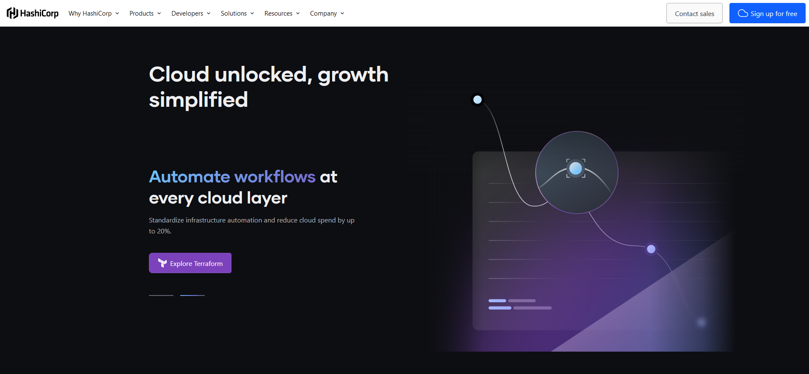

Beyond aesthetics, functionality is my approach
With a meticulous approach to every detail, I ensure that your WooCommerce site
is more than just a digital storefront – it's a dynamic, engaging, and user-centric platform that
captivates visitors across devices.
Test modern apps directly in the browser
Watch your end-to-end and component tests run in real-time as you develop your
applications. Cypress’s simple, yet powerful API runs as fast as your browser can render content.
Test modern apps directly in the browser
Watch your end-to-end and component tests run in real-time as you develop your
applications. Cypress’s simple, yet powerful API runs as fast as your browser can render content.